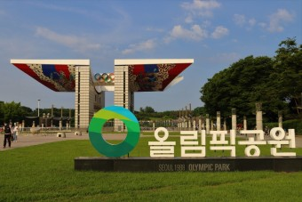
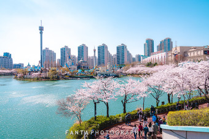

HTML5 학습
W3C
W3SCHOOLS
jQuery
나의 소개
- 이름 : 양정윤
- 별명 : 포뇨
- 관심기술 : Java
- 취미 : 베이킹
올해 재미있게 읽은 책
| 제목 | 장르 |
|---|
| 불편한 편의점 | 소설 |
| 달러구트 꿈 백화점 | 소설 |
| 메리골드 마음 세탁소 | 소설 |
자랑하고싶은 우리동네의 아름다운 곳
1. 올림픽공원-1986년 서울아시아경기대회와 1988년 서울올림픽대회를 목적으로 건설되었으나, 지금은 체육·문화예술·역사·교육·휴식 등 다양한 용도를 갖춘 종합공원으로 이용되고 있다.
2. 석촌호수 - 서울특별시 송파구 잠실동에 있는 호수로, 한강매립사업을 통해 형성되었다.


1. (좌)올림픽공원 2.(우) 석촌호수
이 문서는 양정윤에 의해 HTML5 기술을 사용하여 2024년 6월 28일에 작성하였습니다.(ver 1.0)